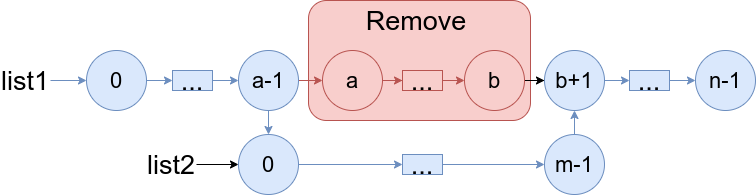
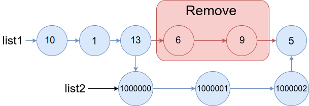
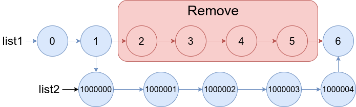

1669. 合并两个链表
题目与约束
给你两个链表 list1 和 list2 ，它们包含的元素分别为 n 个和 m 个。
请你将 list1 中下标从 a 到 b 的全部节点都删除，并将list2 接在被删除节点的位置。
下图中蓝色边和节点展示了操作后的结果：

请你返回结果链表的头指针。
示例 1：

输入：list1 = [10,1,13,6,9,5], a = 3, b = 4, list2 = [1000000,1000001,1000002]
输出：[10,1,13,1000000,1000001,1000002,5]
解释：我们删除 list1 中下标为 3 和 4 的两个节点，并将 list2 接在该位置。上图中蓝色的边和节点为答案链表。
示例 2：

输入：list1 = [0,1,2,3,4,5,6], a = 2, b = 5, list2 = [1000000,1000001,1000002,1000003,1000004]
输出：[0,1,1000000,1000001,1000002,1000003,1000004,6]
解释：上图中蓝色的边和节点为答案链表。
提示：
-
3 <= list1.length <= 104 -
1 <= a <= b < list1.length - 1 -
1 <= list2.length <= 104
核心不变量
删除区间
[a, b]后，只需让「下标a-1的节点」的下一个指向list2的头，并让list2的尾节点指向「下标b+1的节点」；由于a >= 1且b < list1.length - 1，这两个"接缝节点"一定存在。
完整推导
思路推导
- 直觉与痛点（链表不能按下标随机访问）
数组可以直接 arr[a-1]、arr[b+1]，但链表只能从头走。好在 list1 长度至多 10^4，两次线性遍历即可定位两个接缝节点，代价很低。
- 定位两端的接缝节点
prev：从list1头出发走a - 1步，停在下标a-1，它就是删除区间的「前驱」；after：从list1头出发走b + 1步，停在下标b+1，它就是删除区间的「后继」。
小例子（示例 1，a=3, b=4）：prev 是下标 2 的节点（值 13），after 是下标 5 的节点（值 5）。
- 断链 + 拼接
- 先
prev.next = list2，把list1前半段接到list2头上； - 再遍历
list2找到它的尾节点tail，令tail.next = after，把list2的尾巴接到list1后半段上。
注意顺序：必须先让 prev.next 指向 list2，再处理 list2 的尾巴，否则原有的 prev.next（被删区间的头）就丢了引用。其实由于我们先保存了 after，prev.next 无论何时覆盖都不影响 after，但保持清晰顺序更好。
- 边界放心
题目保证 b < list1.length - 1，所以 after 一定不是 null，拼接后尾巴总能闭合；a >= 1 保证 prev 存在，不需要哑节点。
Java 实现（mergeInBetween）
/**
* Definition for singly-linked list.
* public class ListNode {
* int val;
* ListNode next;
* ListNode() {}
* ListNode(int val) { this.val = val; }
* ListNode(int val, ListNode next) { this.val = val; this.next = next; }
* }
*/
class Solution {
public ListNode mergeInBetween(ListNode list1, int a, int b, ListNode list2) {
// 1. prev 指向下标 a-1 的节点（删除区间的前驱）
ListNode prev = list1;
for (int i = 0; i < a - 1; i++) {
prev = prev.next;
}
// 2. after 指向下标 b+1 的节点（删除区间的后继）
ListNode after = list1;
for (int i = 0; i < b + 1; i++) {
after = after.next;
}
// 3. 前驱接到 list2 的头
prev.next = list2;
// 4. 找到 list2 的尾节点，接到 after
ListNode tail = list2;
while (tail.next != null) {
tail = tail.next;
}
tail.next = after;
return list1;
}
}
C++ 实现
/**
* Definition for singly-linked list.
* struct ListNode {
* int val;
* ListNode *next;
* ListNode() : val(0), next(nullptr) {}
* ListNode(int x) : val(x), next(nullptr) {}
* ListNode(int x, ListNode *next) : val(x), next(next) {}
* };
*/
class Solution {
public:
ListNode* mergeInBetween(ListNode* list1, int a, int b, ListNode* list2) {
// prev 指向下标 a-1，after 指向下标 b+1
ListNode* prev = list1;
for (int i = 0; i < a - 1; i++) {
prev = prev->next;
}
ListNode* after = list1;
for (int i = 0; i < b + 1; i++) {
after = after->next;
}
// 前驱接 list2，list2 尾部接 after
prev->next = list2;
ListNode* tail = list2;
while (tail->next != nullptr) {
tail = tail->next;
}
tail->next = after;
return list1;
}
};
Python 实现
# Definition for singly-linked list.
# class ListNode:
# def __init__(self, val=0, next=None):
# self.val = val
# self.next = next
class Solution:
def mergeInBetween(self, list1: "ListNode", a: int, b: int, list2: "ListNode") -> "ListNode":
# prev 指向下标 a-1
prev = list1
for _ in range(a - 1):
prev = prev.next
# after 指向下标 b+1
after = list1
for _ in range(b + 1):
after = after.next
# 前驱接 list2 的头
prev.next = list2
# 找 list2 的尾节点，接到 after
tail = list2
while tail.next:
tail = tail.next
tail.next = after
return list1
复杂度
- 时间：O(n + m)，在
list1上定位两节点最多走b+1步（O(n)），再遍历list2找尾（O(m)）。 - 空间：O(1)，只用了
prev、after、tail等常数个指针。
- 下标要减一 / 加一：
prev停在下标a-1、after停在下标b+1，写成a、b会错位。 after可能是链表尾部：虽然本题保证b < list1.length - 1，但通用写法应考虑after == null的情况（此时tail.next = null收尾）。list2的尾节点必须遍历找：list2是单链表，不能直接拿尾，必须走到next == null。- 先断后接的顺序：先保存
after再改prev.next，避免丢失后半段入口。 - 返回
list1的头：删除的是中间段，头节点不会变，直接返回list1。